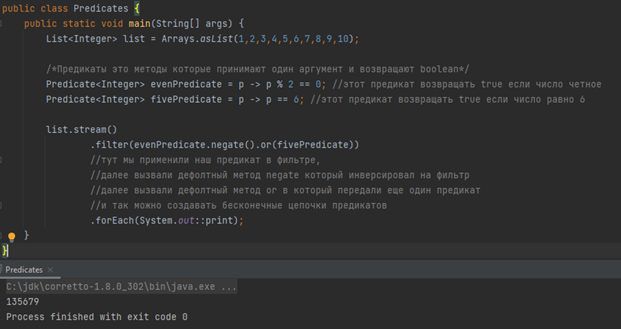
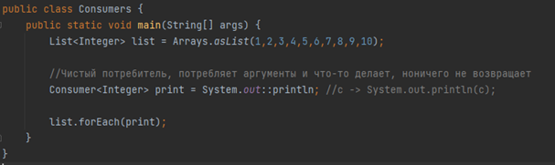
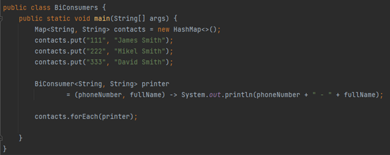
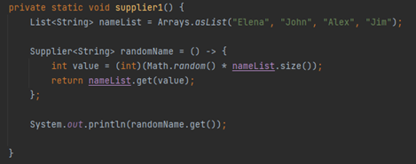
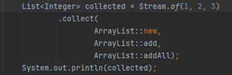
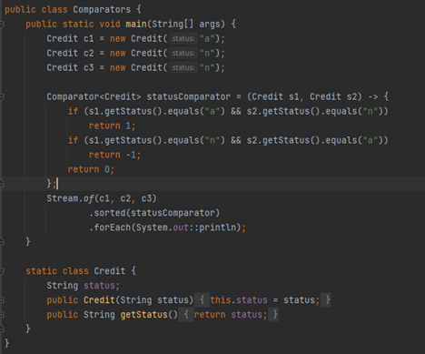

Основные Функциональные интерфейсы используемые в Stream API
Функциональные интерфейсы – интерфейсы, которые содержат только один абстрактный (нереализованный метод).
В результате он может быть неявно преобразован в лямбда-выражение. Кстати, дефолтных (реализованных) и статических методов они могут содержать сколько угодно.
Чтобы другие разработчики не могли написать еще абстрактные методы в функциональный интерфейс его нужно пометить аннотацией @FunctionalInterface.
И в случае, если будет написан новый абстрактный метод, то код не скомпилируется.
В стандартной библиотеке java 8 написано несколько функциональных интерфейсов, которые помимо абстрактного метода,
отражающего суть интерфейса, имеют еще ряд дефолтных методов, позволяющих строить сложные условия.
Чтобы использовать функциональные интерфейсы нам нужно на ходу анонимно реализовать их абстрактный метод.
Predicate
Predicate – условие, обычно применяется для фильтрации, принимает один аргумент, и возвращает boolean.
Абстрактный метод: test()
Дефолтные методы: negate(), and(), or().
Пример применения: чаще всего в методе filter() из Stream API.
Напишем пару условий для фильтрации коллекции, отсортируем на четность, применим negate, и сделаем индивидуальный фильтр для числа 6.
Function
Function – действие, совершаемое над элементом (обычно элементом коллекции). Принимает значение одного типа а возвращает другого типа.
Абстрактный метод: apply()
Дефолтные методы:
- compose() – который может сделать композицию из нескольких функций
- andThen() – который за существующей функцией добавляет еще одну функцию
Статический метод: identity() – возвращает свой входной аргумент.
Пример применения: чаще всего в методе map() из Stream API.
Проведём какие-нить манипуляции с элементами коллекции, меняющие их тип, например, округлить числа Double и привести их к Long.
И сделать еще одну функции следом за первой, которая заменит Long на String основываясь на четности.
Consumer
Consumer – это чисто потребитель, он только принимает аргумент, выполняет какое то действие, и ничего не возвращает.
Абстрактный метод: accept()
Дефолтные методы: andThen() – который за существующим потребителем может добавить еще один.
Пример применения: чаще всего в методе forEach() из Stream API. Идеален для того чтобы вывести коллекцию.
BiConsumer
BiConsumer – двойной потребитель, то же самое что и Consumer имеет те же методы, за одним отличием, он принимает на вход 2 аргумента. Идеален для работы с Map’ами.
Supplier
Supplier – поставщик, генератор, ничего не принимает на вход но что то возвращает.
Абстрактный метод: get().
Дефолтных и статических методов нет.
Пример, Supplier, возвращать случайное имя из списка.
В стримах Supplier применяется в методе collect().
Суть метода collect – собрать стрим в коллекцию.
collect(Supplier supplier, BiConsumer accumulator, BiConsumer combiner) — тот же, что и collect(collector),
только параметры разбиты для удобства (supplier генерирует пустые новые объекты, например new ArrayList(),
accumulator добавляет элемент в контейнер, combiner объединяет части стрима воедино);
Пример:
Comparator
Comparator – сравниватель, нужен чтобы сравнивать элементы между собой.
Абстрактный метод: compare() – принимает в себя два аргумента для сравнения, и должен вернуть число. Если объекты равно должно вернуть 0, если первый больше – то положительное число, если меньше – отрицательное.
Дефолтные методы:
- reverse()
- thenComparing() – который дает возможность делать цепочку сравнений.
- и др.
Статическиу методы: nullFirst(), nullLast() и др.
Пример применения: в методах sorted()
